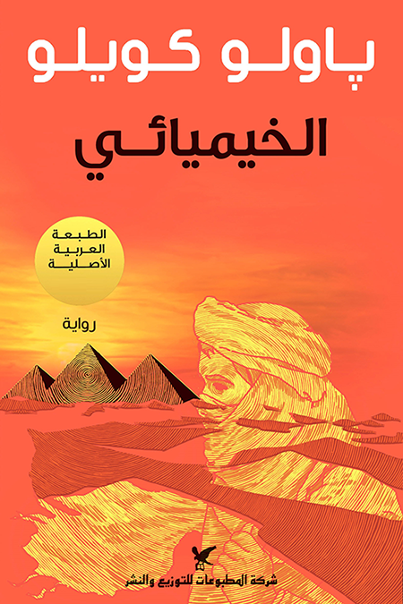

|
 |
الخيميائيرحلة البحث عن الحلم الحقيقي.. في رواية تجمع بين سحر الخيال وعمق الفلسفة، يقدم باولو كويلو قصة سانتياغو، الراعي الأندلسي الشاب الذي يترك حياته المألوفة بحثاً عن كنز مدفون قرب أهرامات مصر. لكن ما يبدأ كرحلة بحث عن الثروة يتحول إلى رحلة اكتشاف للذات والكون. أسطورتك الشخصية.. المفهوم المحوري في الرواية هو "الأسطورة الشخصية" - ذلك الحلم الكبير الذي وُلد معنا، والذي يمنح حياتنا معناها الحقيقي. سانتياغو يتعلم أن تحقيق هذا الحلم يتطلب الشجاعة للمغامرة والثقة في إشارات الكون والإصرار رغم العقبات. في رحلته يلتقي بمعلمين يعلمونه دروساً مختلفة: ملك سالم، تاجر البلور، فاطمة، والخيميائي الذي يكشف له أسرار التحول الداخلي. رسالة عالمية بنكهة شرقية.. رغم أن الكاتب برازيلي، فإن الرواية تحتفي بالحكمة الشرقية والثقافة العربية. "الخيميائي" ليست مجرد قصة مسلية، بل دليل عملي لمن يبحث عن معنى في حياته. |
| المؤلف : بابلو كويلو |
|---|
| المترجم : جواد صيداوي |
| عدد الصفحات : 236 |